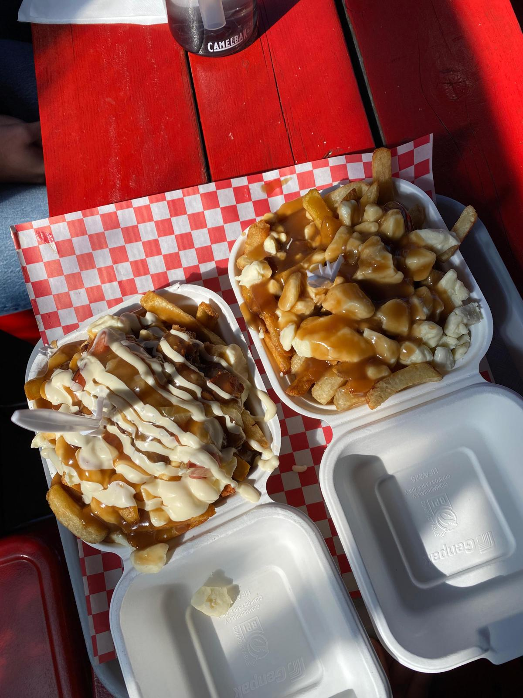

NOEMIE BOESPFLUG
A propos de moi
Étudiante en maîtrise de développement international (Université Laval), je combine expertise en analyse géopolitique et juridique, gestion de projets humanitaires et recherche appliquée en sciences sociales. Ayant déjà une expérience en contexte multiculturel et en situation de crise, ainsi qu’en gestion de projet et en synthèse stratégique, je souhaite mettre mes compétences au service d’engagements concrets pour les droits humains dans le cadre d’un stage de plusieurs mois .
Formation académique
2025-2026 :
- Double diplôme avec maîtrise à l'Ecole Supérieure des Relations Internationales de l'université Laval (mineure "Développement International")
2024-2025 :
- Master « Politique internationale » à Sciences Po Bordeaux (Bac +5)
- Licence 3 de Droit, parcours Droit International et Européen (faculté de Bordeaux) en parallèle
2023-2024 :
- Premier cycle de SPB / B.A. in political and social sciences, Cursus Général, mention Bien ;
- Mémoire sur “Le voile islamique et ses symboliques : l’impact de la Révolution de 1979 sur le regard des Femmes iraniennes”, encadré par Mme. Catherine HOEFFLER
2022-2023
:- Mobilité internationale (Erasmus) : Bogazici University, Istanbul, Turquie. Faculty of Economics and Administrative Sciences, Department of Political Science and International Relations, validé avec 16,80 de moyenne (GPA de 3,2)
2019-2022 :
- Baccalauréat mention Très Bien en Humanités, Littérature et Philosophie / Histoire, Géopolitique et Sciences Politiques, Option Européenne Allemand / Option Langues Anciennes / Option Droit et Grands Enjeux Contemporains
Mon CV
N'hésitez pas à regarder mon CV plus en détail !
Expérience professionnelle
Depuis mes 18 ans, se sont construits au croisement des luttes sociales, de la solidarité humanitaire et de la recherche sur les droits humains.
2025 :
- Auxiliaire de recherche dans la chaire de recherche en Etudes Nordiques de l’Université Laval sur la population Inuit Nunavik (Québec, Canada)
2024 :
- Stage à la Maison de l’Europe, Lyon (France) : mémoire sur l’histoire du Droit Européen des Etrangers, vulgarisation pour l’éducation à ce sujet en collèges et lycées
- Stage en Cabinet d’avocats pour les étrangers, Lyon (France) : entretiens avec des demandeurs d’asile, préparation des procès et suivi des dossiers
- Stage à la Ligue des Droits de l’Homme, Paris, siège (France) : juriste, permanence téléphonique juridique et suivi des dossiers d’atteinte aux droits humains
2023 :
- Stage à Le Centre, Cotonou (Bénin) : Centre culturel, chargée de bilan des actions culturelles et artistiques de promotion de l'éducation populaire et sensibilisation locale au patrimoine du Royaume du Danxomé
- Stage à PCC Hand-in-Hand, Nkoranza (Ghana) : Communication d’ONG humanitaire d’aide aux orphelins souffrant d’un handicap mental
2022 :
- Stage à Utopia 56, Grande-Synthe, Calais (France) : Aide d’urgence humanitaire dans un camp de personnes exilées irrégulières vivant dans des quartiers informels insalubres le long de la frontière franco-britanniqueEngagements associatifs et solidaires
2025 :
- Participation mensuelle aux réunions de la Ligue des Droits de l’Homme de Bordeaux
- Collectif d’aide aux Mineurs Non Accompagnés de Bordeaux (CMNA33) : administratif, culturel ou juridique
2024 :
- Courte formation d’aide avec Médecins Sans Frontières : visites de terrain, enjeux liées au monde agricole girondin
- Chargée de coordination féministe à l’AG Féministe de Gironde
2021-2024 :
- Co-présidente d’une association d’arts plastiques : ateliers hebdomadaires, concours artistiques, partenariats, publication journalistique mensuelle
- Co-présidente d’une association de musique du sud-ouest, percussionniste : répétitions hebdomadaires, partenariats de Coupe du Monde et Européenne, festival international de musique
2023 :
- Aide à Istanbul aux victimes du séisme en Syrie et Turquie (février 2023), récolte de vêtements et de nourriture
2022 :
- Co-présidente d’une association de maraude pour personnes sans domicile fixe
2021:
- Membre d’une association d’accompagnement d’une personne réfugiée dans son insertion professionnelle et sociale à Bordeaux
- Responsable mise en scène d'une pièce de théâtre au Trianon, comédienne
2018-2020 :
- Responsable de l’antenne Lycée d’Amnesty International de Lyon
Compétences
- Analyse des négociations internationales et situations géopolitiques, des conflits et des
risques politiques
- Gestion du stress en situation d’urgence et adaptation
- Synthèses écrites et orales
- Responsabilité de groupe importants
- Autonomie
- Gestion d'événements culturels et humanitaires de courte et de longue durée
- Apprentissage approfondi sur des sujets précis et ciblés
- Plaidoirie orale et écrite
Loisirs
- Théâtre (7 ans d’art dramatique contemporain et classique)
- Eloquence (participation à des
concours et discours thématisés)
- Boxe anglaise (2 ans de pratique)
- Escalade (1 an de pratique en montagnes turques)
- Danse
classique (6 ans d’endurance)
- Art contemporain et politiquement engagé du 21e siècle (10 ans de pratique artistique comme
le dessin, la peinture et la sculpture)
- Percussions (2 ans de gestion de répertoire musical, de
répétitions, d’organisation d’évènements et d’apprentissage de la batterie de fanfare)
Me joindre
N'hésitez pas à me contacter si mon profil peut vous intéresser pour un travail de terrain solidaire, humanitaire, de gouvernance ou de recherche.